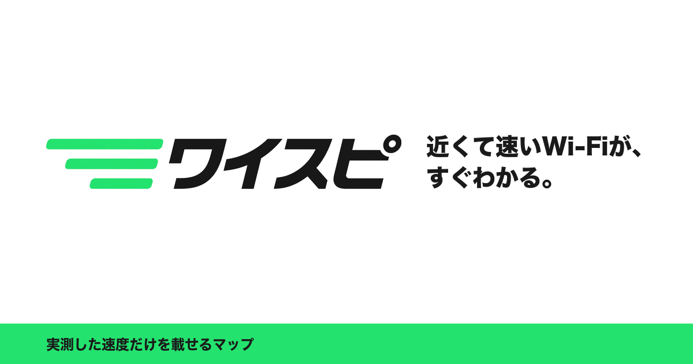
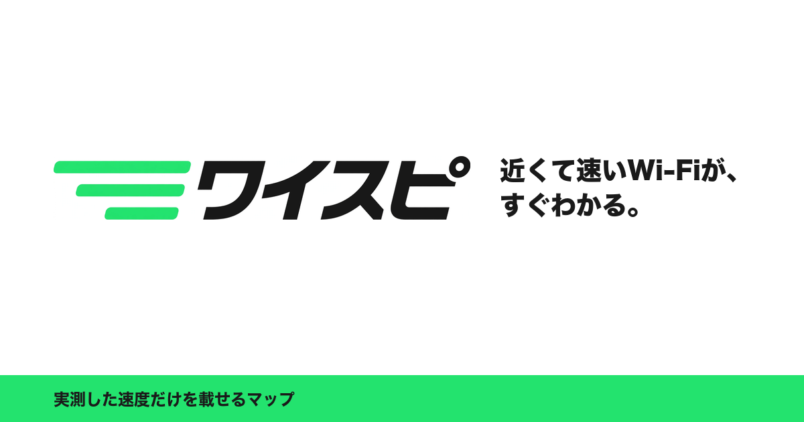
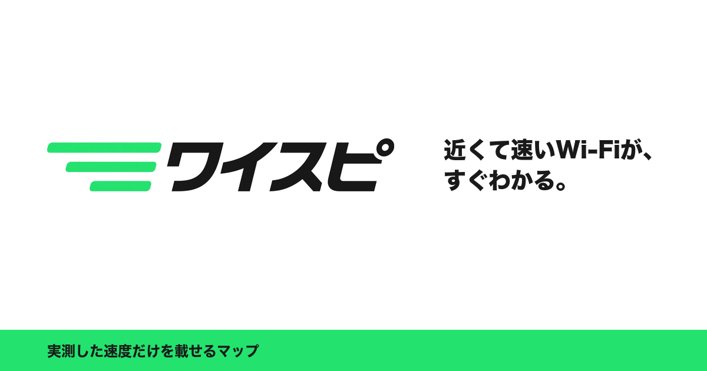
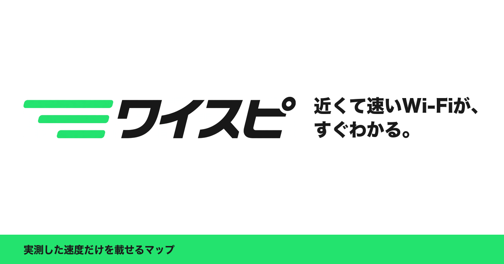
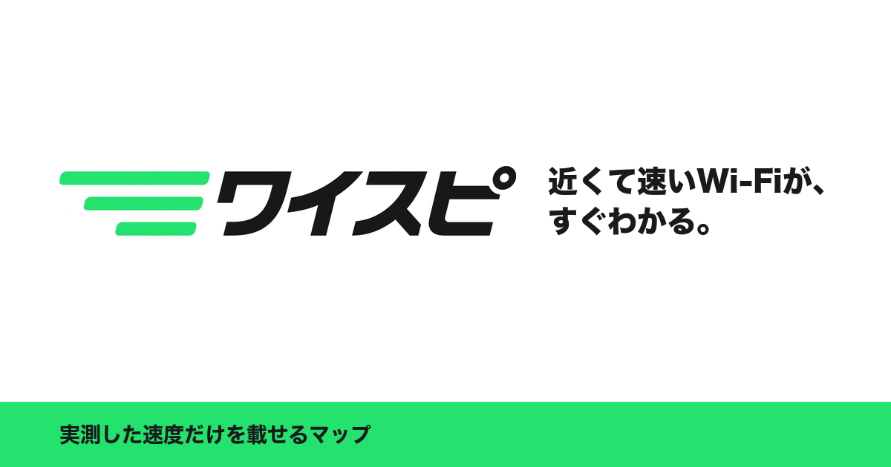

1ぴったり一致

ロゴ高さ：94px ／ コピー高さ：94px（完全一致）
ロゴ 615×94px。ロゴとコピーの間隔は標準（44px）、帯は標準（70px）。
ロゴ 615×94px。ロゴとコピーの間隔は標準（44px）、帯は標準（70px）。
2ロゴ少し大きめ

ロゴ高さ：95px ／ コピー高さ：90px（ロゴが約+6%大）
ロゴ 622×95px。気持ちロゴが勝つバランス。
ロゴ 622×95px。気持ちロゴが勝つバランス。
3間隔広め

ロゴ高さ：90px ／ コピー高さ：90px（完全一致）
ロゴ 589×90px。ロゴとコピーの間隔を広め（84px）に取った案。
ロゴ 589×90px。ロゴとコピーの間隔を広め（84px）に取った案。
4全体大きめ

ロゴ高さ：99px ／ コピー高さ：99px（完全一致）
ロゴ 648×99px。左右の余白を詰めて、ロゴ＋コピー全体をひと回り大きく配置。
ロゴ 648×99px。左右の余白を詰めて、ロゴ＋コピー全体をひと回り大きく配置。
5帯太め・帯文字大きめ

ロゴ高さ：94px ／ コピー高さ：94px（完全一致）
ロゴ 615×94px（案1と同じ配置）。下の緑帯を太く（88px）し、帯の文字も大きく（28px）。
ロゴ 615×94px（案1と同じ配置）。下の緑帯を太く（88px）し、帯の文字も大きく（28px）。